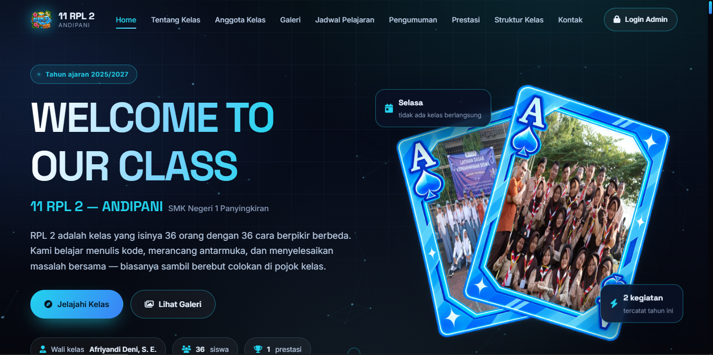
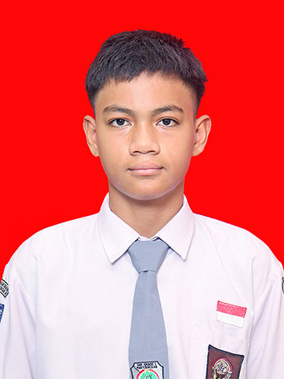

ActiveWEBSITE KELAS (ANDIPANI)
Aplikasi chatting web responsif dengan sistem channel obrolan dan tampilan dark mode modern.
Student Developer Creative Technologist
Saya membangun berbagai proyek digital untuk mengeksplorasi bagaimana desain, teknologi, dan kode dapat bekerja bersama dalam sebuah pengalaman yang sederhana dan berguna.

Halo, saya Said Rifaa Anaqi. Seorang pelajar dan pengembang perangkat lunak yang memiliki ketertarikan mendalam pada rekayasa web modern, struktur kode yang bersih, serta desain antarmuka yang intuitif.
Perjalanan saya dalam dunia pemrograman berawal dari rasa ingin tahu tentang bagaimana ide konseptual dapat diubah menjadi aplikasi fungsional. Saya memusatkan fokus pada pembangunan proyek-proyek praktis yang menyeimbangkan antara performa teknis, kegunaan pengguna, dan kerapian visual.
Setiap baris kode adalah kesempatan untuk belajar hal baru. Saat ini, saya terus memperdalam keahlian dalam ekosistem frontend, logika pemrograman berorientasi objek, serta prinsip-prinsip desain digital kontemporer.
Kumpulan bahasa pemrograman, perkakas pengembang, serta metodologi desain yang aktif saya pelajari dan aplikasikan.
Kumpulan proyek web, aplikasi, dan eksplorasi antarmuka. Klik salah satu proyek untuk membuka detail spesifikasi lengkap.

ActiveAplikasi chatting web responsif dengan sistem channel obrolan dan tampilan dark mode modern.
Langkah-langkah eksplorasi dalam dunia rekayasa perangkat lunak dan desain teknologi.
Mulai mempelajari fondasi web dasar (HTML, CSS, JavaScript) dan konsep pemrograman berorientasi objek. Mencoba membuat halaman statis dan utilitas sederhana untuk memahami logika algoritma.
Mengeksekusi ide ke dalam proyek nyata seperti platform chat, forum komunitas, sistem pencatatan saran, dan aplikasi produktivitas. Memperdalam pemahaman modularitas kode, manipulasi DOM, dan responsive design.
Berfokus pada standar industri: arsitektur antarmuka modern, desain sistem terstruktur, aksesibilitas web (a11y), pengoptimalan performa, serta kesiapan integrasi mobile dan web app skala lebih luas.
Rekayasa Perangkat Lunak (RPL) / Software Engineering
Mempelajari konsep dasar rekayasa perangkat lunak, pemrograman web dan desktop, pemodelan basis data, algoritma, serta kerja kolaboratif pengembangan proyek digital.
Eksplorasi layanan dan kemampuan teknis yang saya tawarkan dalam pengembangan proyek digital.
Membangun website modern dengan arsitektur HTML5 semantik, CSS modular, dan logika JavaScript yang bersih serta berorientasi pada efisiensi.
Merancang wireframe dan antarmuka visual yang ergonomis, mengutamakan kenyamanan pengguna, hierarki informasi jelas, dan estetika minimalis.
Mengimplementasikan desain menjadi kode hidup yang responsif di berbagai resolusi layar, dari smartphone hingga layar desktop lebar.
Mengeksplorasi dasar pembuatan aplikasi mobile Android menggunakan bahasa Kotlin dan Java dengan fokus pada fungsionalitas praktis.
Mengembangkan proyek eksplorasi mandiri secara berkala untuk menguji teknologi baru dan memperluas portofolio inovasi digital.
Punya pertanyaan, ide proyek kolaboratif, atau ingin berdiskusi seputar teknologi? Silakan hubungi saya melalui form atau saluran di bawah ini.
Silakan gunakan kanal komunikasi langsung berikut:
Respons biasanya dikirimkan dalam 1-2 hari kerja. Terbuka untuk diskusi proyek dan pertukaran gagasan teknis.
Lihat repositori kode sumber dan histori commit dari berbagai eksperimen perangkat lunak saya di GitHub.